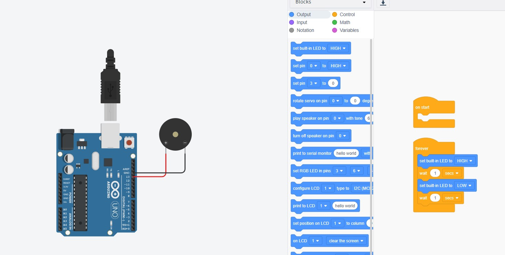

Our Arduino Robotics Activities
Push Button Experiment
We did this activity to learn how to use a push button with an Arduino.
int BUTTON_PIN = 2;
void setup() {
pinMode(BUTTON_PIN, INPUT);
Serial.begin(9600);
}
void loop() {
if (digitalRead(BUTTON_PIN) == HIGH) {
Serial.println("BUTTON IS PRESSED");
} else {
Serial.println("BUTTON IS NOT PRESSED");
}
delay(100);
}
Controlling LED Brightness with a Potentiometer
We learned how to adjust LED brightness using a potentiometer in this experiment.

int potPin = A0;
int ledPin = 9;
void setup() {
pinMode(ledPin, OUTPUT);
}
void loop() {
int potValue = analogRead(potPin);
int ledBrightness = map(potValue, 0, 1023, 0, 255);
analogWrite(ledPin, ledBrightness);
delay(100);
}
Passive Buzzer Melody Sound
We experimented with generating different tones using a passive buzzer.
int buzzer = 13;
void setup() {
pinMode(buzzer, OUTPUT);
}
void loop() {
tone(buzzer, random(500, 1500));
delay(300);
}
Active Buzzer Alarm Sound
We built a simple alarm using an active buzzer and Arduino.

int buzzer = 13;
void setup() {
pinMode(buzzer, OUTPUT);
}
void loop() {
digitalWrite(buzzer, HIGH);
delay(500);
digitalWrite(buzzer, LOW);
delay(500);
}